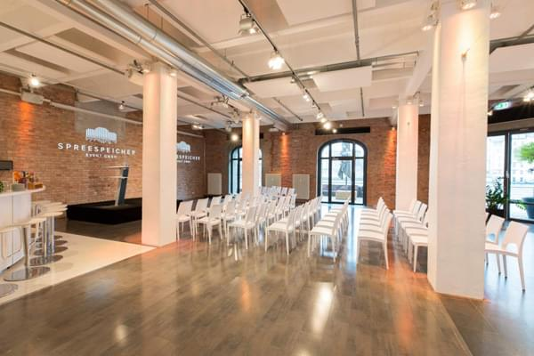

Web accessibility and assistive technology
While the necessity and benefits of accessible services on the web are pretty obvious, web accessibility is still not a widespread practice. Common reasonsings range from putative additional efforts, tight budgets to the misbelief that «validity equals accessibilty». In many cases, however, it seems that the majority of developers simply has no clue where to start — which comes as no surprise as most of them have never gotten their hands on assistive technology.
The Accessibility Club wants to give you the chance to get some real-world experience with assistive technology, deepen your knowledge about web accessibilty and get you in touch with like-minded webworkers. The goal is to enable you to make accessibility a natural part of your daily work and mindset.
The first ever a11yclub conference: Be part of it!
When the Accessibility Club started in Nuremberg back in 2014, it was nothing more than a tiny meetup with one blind guy, his screenreader and a bunch of web geeks. It was the initial Berlin edition in 2016 that attracted international guests and presenters for the first time — a big leap forward which also made the format shift towards a mixture of presentations and barcamp like discussion sessions.
Luckily, the awareness for accessibility matters seems to be steadily growing — not only among enthusiasts but also on the stages of «regular» web conferences. It's this very momentum that makes Joschi and Stefan think that it's time for the next level on November 5th, 2018: For the first time, the Accessibility Club will take the form of a full-day, single-track conference, aiming for ~150 attendees, with 4-5 hand-picked speakers and a few more community contributions.
November 5th, 2018 — Schedule
| Time | Agenda Item |
|---|---|
| Doors Open / Registration | |
| Opening | |
Molly WattAccessibility beyond DesignOver the last few years Molly has traveled a lot and spoken about the importance of accessibility and usability as well as inclusive thinking within design. But the talk she wishes to deliver to you will be a little different … When the word “Accessibility” is spoken, many associate this with disability and a compliance checklist within design. Molly looks to broaden people's perspectives when thinking of accessibility, how without basic inclusive thinking her overall journey in life is pretty complicated. She will talk about how she mobilises on public transportation, how the difficulties she has are not dissimilar to others — also comparing how much harder it can be for those with accessibility needs to be independent like others — despite being more than capable of it. Not only should it be considered a reasonable adjustment for everyone, within a workplace, within design, within architecture, it should make everyones life easier. Molly hopes to talk about some of these challenges and bring further awareness of what people often miss when thinking about accessibility, using her experiences as a DeafBlind person. | |
| Coffee break | |
Holger DieterichThe new Wheelmap or how to exchange accessibility data, standardizedLooking for a nice hotel, a yummy restaurant or a good place to go shopping? Many apps and websites help you with that. But if you have a disability, you are often out of luck with your specific questions: Are there steps at the entrance? Will my assistance dog be allowed? Is an induction loop available for my hearing aid? The answers are hard to find and they are missing out. This is a constant problem. Taking part in daily life is a basic human right, a right that is denied to a huge segment of the world’s population every day. For wheelchair users, the SOZIALHELDEN ("social heroes") have built Wheelmap.org, which is now the largest map to find and report wheelchair information about public places. Other non-profit organizations have also collected information for similar use cases. But the services often only have a local scope, are buried inside other apps or cover just certain kinds of public places. In this talk, Holger Dieterich will introduce Accessibility.Cloud, an open exchange platform for accessibility data of places. For the first time, it is possible to access such data of over 1.5 million places from 90 different sources through one API. This will enable app developers to include accessibility information into their services, making them more inclusive for everyone. | |
Léonie WatsonThere's more to performance than meets the eyeWhat does performant look like when you can't see the screen? The browser does more with the DOM than visually render content. It presents an accessibility tree that's queried using platform accessibility APIs. Different browser processing models mean that Assistive Technologies (AT) are changing the way they obtain accessibility information, but is that having an impact on performance, and what happens when we introduce a JavaScript accessibility API into the equation? | |
Tom WiderøeHow can we use web analytics to improve accessibility?Web analytics is great for improving user experience, but it does not tell us if someone is using assistive technologies and how the website works for these users. Why is that information kept away from us? And are there other ways of doing this? Without web analytics, we would have no idea of how the users actually use our website. The tools tell us almost everything about the users' devices and browsers, so we can for example know it works for desktop users and mobile users separately. But we do not know if the user is using assistive technologies. Why is this information kept away from us, and how can we know how our website works for users with disabilities? Tom has tested a few methods and will share his experiences with you. | |
| Lunch break | |
Vasilis van GemertExclusive DesignVasilis van Gemert flipped the inclusive design principles and turned them into a set of exclusive design principles. He used these principles to create tailor made, innovative, pleasurable user experiences for real people with disabilities. The common way to make websites accessible is by using the ideas behind inclusive design. This way you can create interfaces that work equally well for everybody, regardless of the device they use, and regardless of the assistive technologies they need. This works, at least in theory. In practice the results are mostly disappointing. In order to make inclusive design work we need to be as good at desinging interfaces for ourselves as we are at designing interfaces for people who need assistive technologies, or people who have different needs. In the past 30 years we've studied graphical user interfaces extensively, and if we try, we can create increbile user experiences that are a pleasure to use. Understandably we haven't dug into designing things for alternative forms of input and output as much, since we don't use them that much ourselves. We have been designing exclusively for the lucky people who use their computer in a similar way as we do. So Vasilis' idea is to flip things around a bit. Instead of designing exclusively for ourselves, he started to design tailor made solutions for — and together with — people with special needs. In the past year, Vasilis did several experiments with designing digital user experiences exclusively for real persons with real disabilities. Together with his students he came up with — sometimes crazy — alternative forms of interaction for a friend who is severly motor disabled. They reimagined a video page for a designer who is deaf. They designed a website for a blind designer with the Blind First principle. Recently a large design agency started working with the exclusive design method for their clients as well. Hopefully by November they will have some insights to share. In this talk, Vasilis will show you the results of these experiments, and share all the insights he gained during his research. Well, all the insights that fit into a 20 minute talk … | |
Charlie OwenDoing accessibility at scaleEnsuring universal access in a multi-national company Ensuring accessibility can be a challenge in any organisation. Ensuring it in Springer Nature, a multi-billion euro global company with tens of thousands of employees, well, that's some next level shit. In this talk Charlie will tell you why accessibility is vital to Springer Nature, how we ensure that it happens, and some of the challenges that we've faced along the way. | |
| Coffee break | |
Hidde de VriesTrollies, veils and prisoners: the case for accessibility from philosophical ethicsThe case for making websites accessible from the viewpoint of philosopical ethics. Those who want to make accessible websites, will likely spend some of their time convincing others. One good reason to make accessible websites is that doing so is the right thing. For centuries, doing the right thing has been a concern for the field of philosophical ethics. In this talk, some notable philosophical thought experiments are applied to the world of web accessibility. With some practical examples, this talk makes a refreshing case for web accessibility, which people can use to advocate for more inclusive websites. | |
Sarita Saffon LópezTowards Accessible AI applications: the case of Voice Activated Virtual AssistantsWe are massively adopting virtual assistants (Siri, Cortana, Google Assistant, Bixby, Alexa…) that make our everyday lives easier. However, are they designed to be accessible? What are the current challenges & best practices in this type of AI applications? Does a design-for-all exist in this field? Sarita's talk will start by introducing the concept of Voice Activated Virtual Assistants (VAVAs), which many attendants surely use (Siri, Google Assistant, Alexa, Cortana). She will show some figures about the usage of these VAVAs (who uses them, why, for what…) Out of these users, how many are disabled? Do we think this technology is accessible for them? Different ways of interaction to adapt to different segments: voice, text, tactile… We will go through the benefits of using VAVAs for each segment: elderly, visual, physical, auditive… disabled users. Current challenges: There are no specific regulations in this category, each disability has its own usage limitations… Best practices for designing, evaluating and implementing VAVA accessibility (Examples of EEUU and Europe (Spain, France and UK). What is being done to address these challenges? Telefonica (trading as Movistar, O2 and Vivo), the multinational telecommunications organization, is developing Aura, an Artificial Intelligence Driven Virtual Assistant. This company is pursuing Aura to be as accessible as possible for all of their clients, developing different ways of interaction, functionalities, user experience and design to be usable and useful for a wide audience. Their team is going to accessibility courses, testing ideas with users with different disabilities, researching on what has been done… Sarita will show some examples of the way Aura is being created, developed and refined to be an accessible Virtual Assistant. She will do this by showing two examples: a standalone home device called Movistar Home as well as Aura integration in Movistar + App (Telefonica VoD and paid TV service). After reviewing different examples of good practices and not-so-good practices Sarita will try to answer the following questions: How to design for all? What can be done? What should we, as organizations, take into account to design & evaluate accessible Virtual Assistants products and services? She will finish by telling a series of take away messages. | |
| Coffee break | |
Alistair DugginA Four-Part Accessible Design StrategyMaking something accessible is about much more than just following a checklist. But sometimes teams need to know where to start. This talk will outline a 4-part strategy for making digital products accessible. Following this approach will immediately improve the usability for everyone — and will kick-start the delivery team's understanding of how to go on to make a product truly accessible. | |
| Closing |
Meet Our Speakers
So far, we are in the extremely fortunate position of being joined by:
Léonie Watson

Alistair Duggin

Alistair's talk will outline a 4-part strategy for making digital products accessible — and maybe even give us some insights into the new GOV.UK Design System? (Full bio)
Charlie Owen

Molly Watt

Due to an unexpected date conflict, inclusion activist Raúl Krauthausen had to step back from his speaking engagement for this year's conference. We're working on ideas to further keep him involved and hope to get him on stage at some other point in the future.
Community champions
We ran a Call for Papers via Colloq in order to find a couple more speakers from the community for what we call «mini-talks» (~20 minutes length). We received a whopping 42 proposals with a fantastic overall quality, and it was a really, really tough choice. We are deeply grateful for all your suggestions — thanks so much for this! Here are the community champions that have confirmed so far:
Tom Widerøe

Vasilis van Gemert

Sarita Saffon López

Hidde de Vries

Holger Dieterich

What we're up to
These are some of our objectives for 2018:
- Diverse line-up of presenters and topics
- Warm atmosphere, welcoming both experts and novices
- As non-commercial and affordable as possible (as always)
- No swag and other useless stuff
- The venue and its facilities must be fully accessible for wheelchair users
- Presentations will be live-streamed, live-captioned, visually facilitated, recorded and published afterwards (also as transcriptions)
Venue
Our venue will be the 030 Eventloft at the beautiful, historical Spreespeicher (Stralauer Allee 2, 10245 Berlin).
The historical grain silo is situated right by the river Spree with a beautiful view on the "Oberbaumbrücke" (bridge) and amidst the trendy media district of Berlin Friedrichshain. If the weather plays along we can also use the waterfront terrace for the smaller breaks.
The venue is fully accessible for wheelchair users (including the bathrooms).

Tickets
The Regular Ticket costs € 80 (including 19% German VAT) for the conference day. Coffee, tea, softdrinks and some small snacks throughout the day are included. There will be an extended lunch break which you can use for grabbing a snack somewhere around — there are plenty of cafés and small restaurants within short walking distance.
Get your ticket now!We also have a Diversity Supporter Ticket for € 120 (or more if you feel generous — just «pay what you want»). Each supporter ticket will unlock an additional scholarship / diversity ticket for someone else (see below).
Diversity / Scholarships
We want our conference to be as accessible and welcoming as possible — for everyone. That's why we try hard to keep the ticket price low and skip all unnecessary cruft. Additionally, we'll give out free Scholarship / Diversity Tickets and strongly encourage applicants from underrepresented groups in tech to apply. This includes, but is not limited to: women-identifying persons, people of color, LGBTQIA people, people with physical and mental disabilities, people facing economic and / or political hardships. An additional scholarship / diversity ticket will be unlocked for every supporter ticket we sell (see above). To apply for a scholarship / diversity ticket, please send a brief informal email to hello@a11y-club.org and let us know why the conference shouldn't happen without your attendance.
Code of Conduct
We have a Code of Conduct in place for your event. It's there to ensure maximum inclusivity and that everyone feels welcome and comfortable throughout the event. Please make sure your read and understand its contents before registering and attending. It goes without saying that our Code of Conduct also applies to our valued speakers, sponsors and supporters.
We need your help!
- If you think you or your employer can support as a sponsor, please read our sponsoring information in English or in German and get in touch with us.
- In any case you can help spreading the word and let your friends on Twitter, Facebook and Colloq know that you will be part of it!
Thanks for your support! ❤️
On a side note ...
For those of you interested in this kind of things, the Accessibility Club is occasionally offering meetups and hands-on workshops on various topics around web accessibility and assistive technology. Please find an up-to-date list of our future events over at Colloq.
Your hosts
Joschi Kuphal

Joschi Kuphal is an interior designer, programmer and restless tinkerer from Nuremberg.
He's working on the web since the mid 90s, founded tollwerk and the Open Device Lab Nürnberg, is an IndieWeb enthusiast and author of several of Open Source tools. Since 2013 he launched a couple of event series like the border:none and Material conferences, the Accessibility Club and the CoderDojo Nürnberg. He's running IndieWebCamps, the Homebrew Website Club Nürnberg and is one of the driving forces behind the Nürnberg Digital Festival.
Stefan Judis

Stefan Judis started programming 7 years ago and quickly fell in love with web performance, new technologies and automation.
He is also a curator of the web performance online resource Perf Tooling, organizer of the Web Performance Meetup Berlin, contributes constantly to a variety of open source projects and enjoys sharing nerdy discoveries.